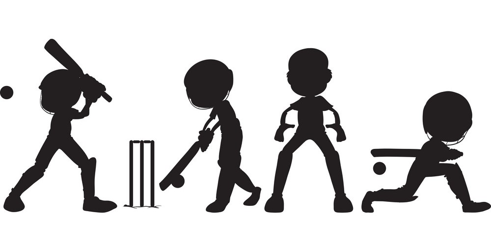
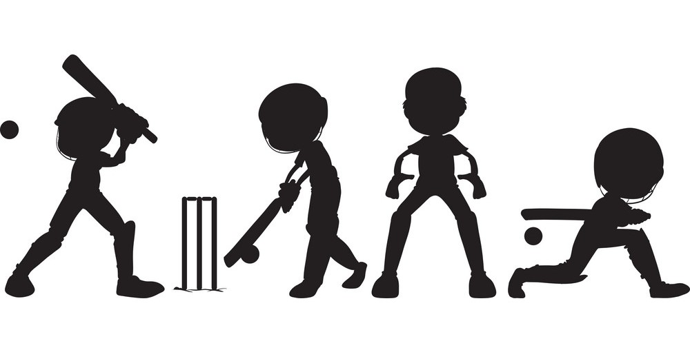

Sketching
Hobbies are a great way to relax and unwind after a busy day at the office.Sketching and drawing is a great way to improve your creative skills and start thinking in a different way. Art shows you that there is normally more than one way to solve a problem. Art encourages open ended thinking and creativity. These can be really helpful for personal development and solving problems. Skills you learn through sketching can be applied in a number of different areas in your life.
Coding
Coding is a great hobby that can lead to a lucrative and very fulfilling career. For many coding hobbyists, though, there are a lot of questions between point A – having a passion for programming – and point B – turning that passion into a career. Additionally, there are several potential career paths to consider before making the jump.
Cricket
Cricket is my favorite hobby and a famous sport too. It makes me feel healthy, fit and a stronger person. It makes me feel confident and proud of what I am. I started playing cricket when I was a kid of 7 years old.My cricket passion started when I was a small kid and I started playing this game with my elder brother in the back side of my home.
Reading
My favourite hobby is reading. I enjoy reading a book when I am free. I started to do it when I was four years old. The first time I did it, I felt interested. So I kept reading. The teachers always taught me to read the difficult words. I was happy when I read a story with a happy ending. I was thrilled when I read a detective story.I enjoy reading because I like to explore the imaginative world of my favourite author